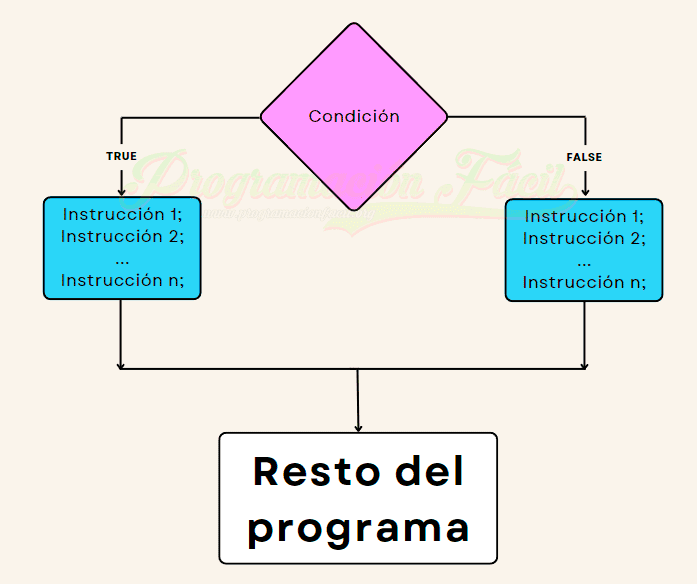

IF ELSE
IDEAS CLAVE
- if/else son condiciones para ver si una funcion se activa dependiendo se su funcion.
- Los operadores nos permite ejecutar operaciones mas complejas para ser resueltas y
arrojar resultados y ser enlazados a las condiciones de if o else.
- == / === - permite la verificacion de 2 valores si son iguales si son o no el mismo tipo de dato.
- < y > tratan de verificar si el valor de la izq es mayor/menor que su lado derecho.
- <= y => similarmente a los operadores anteriores pero agregandole si son iguales a cada lado y viceversa.
- != Solamente se encarga si son diferentes valores.
NOTAS DE LA CLASE
Declaracion condicional
- Una declaracion condicional permite poder definir un flujo de un programa basado en condiciones.
- Si una condicion es verdadera, se puede ejecutar un fragmento de un codigo, si esta es falsa ejecutará otro en su lugar.
- Con Java se tiene unas condiciones llamadas:
- Use if - si se le especifica un bloque de codigo para que sea ejecutada solamente si es verdadera
- Use else - si es todo lo contrario
- Sintaxis - la siguiente declaracion se escribe así:
- if(condicion){codigo que se ejecutará}
- else{codigo ejecutado si es falso}
- Igualdad == - compara 2 valore para verificar si son iguales, sin considerarse el tipo de dato.
- Igualdad Estricta === - igual a la anterior pero esta vez si son del mismo tipo de dato y valor.
- diferente != - verifica si son diferentes sin considerar el tipo de dato.
- Mayor que > - Verifica si el valor de izq es mayor que la derecha.
- Menor que < - Verifica si el valor de izq es menor que la derecha.
- Mayor o igual >= - Trata de verificar si el valor de izq es mayor o igual que la derecha
- Menor o igual <= - Trata de verificar si el valor de izq es menor o igual que la derecha
